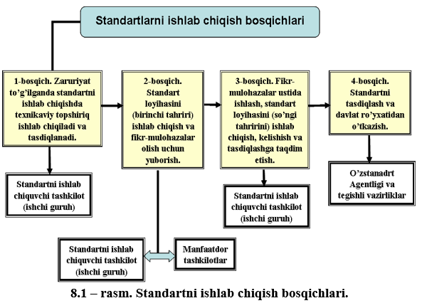
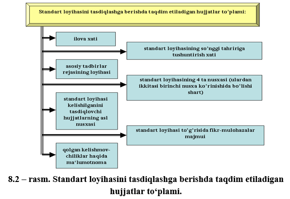

Mashgʻulotning maqsadi: Standartni ishlab chiqish bosqichlari, standartning mazmuni, standart
loyihasini tasdiqlash va davlat roʻyxatidan oʻtkazish tartib-qoidalari, joriy qilish iqtisodiy
samaradorligini hisoblash usullari bilan tanishish va oʻrganish.
O‘zRST 1.1 – 92 “O‘zbekiston Respublikasining standartlashtirish davlat tizimi. O‘zbekiston
Respublikasining standartini ishlab chiqish, kelishib olish, tasdiqlash va ro‘yxatdan o‘tkazish tartibi”
standartiga binoan O‘zbekiston Respublikasi standarti (bundan keyin standart deb yuritiladi)
standartlashtirish bo‘yicha texnikaviy qo`mitalar (bundan keyin TQ), standartlashtirish bo‘yicha tayanch
tashkilotlar, vazirliklar, idoralar, uyushmalar, konsernlar, davlat, shirkat, pudratchi, aktsioner,
qo‘shma korxonalar, muassasalar va tashkilotlar tomonidan ishlab chiqiladi.
Standartni har xil tashkilotlar mutaxassislarining ishchi guruhlari tomonidan ishlab chiqishga yo‘l
qo‘yiladi.
Standartning bir nechta tashkilot tomonidan ishlab chiqilishida yetakchi ishlab chiquvchi
tashkilotlar
(ijrochilar ro‘yxatida birinchi o‘rinda turadi) hamkorlikda ish bajaruvchi har bir tashkilot bilan ish
kulamini va muddatlarini aniqlaydi.
Standart respublika hududida kimga qarashli ekanligi va mulk shaklidan qat’iy nazar, mahsulotlarni
chiqaradigan va iste’mol qiladigan hamma korxona va tashkilotlar uchun majburiydir.
Standartga kiritiladigan o‘zgarish asosiy standart uchun belgilangan tartibda majburiy kelishib
olinishi, tasdiqlanishi va ro‘yxatdan o‘tkazilishi lozim.
Standartlarning tuzilishi, mazmuni, bayon etilishi va rasmiylashtirilishi GOST 1.5 – 85 ga va O‘zDst
1.5-99 talablariga, texnikaviy shartlar esa O‘zDst 1.2-99 ga tо‘g‘ri kelishi kerak.
О‘zbekiston Respublikasining standartlarini ishlab chiqish, kelishish, tasdiqlash va rо‘yxatga olish
tartibi O‘zDst 1.1-99 standartiga binoan belgilanadi.
Texnikaviy shartlar O‘zDst 1.2-99 standarti bо‘yicha belgilangan tartibda ishlab chiqiladi,
kelishiladi,
tasdiqlanadi va rо‘yxatdan о‘tkaziladi.
Korxonlar standarti O‘zDst 1.3-99 da belgilangan tartibda ishlab chiqiladi, kelishiladi,
tasdiqlanadi va
rо‘yxatdan о‘tkaziladi.
Davlat standartlari quyidagilarni о‘z ichiga oladi.
a) Maxsulotning asosiy iste’mol (ekspluatasion) tavsiflarini, ularning axolining hayoti, sog’lig’i
va
mol mulkiga, atrof muxitga, texnika va ishlab chiqarish sanitariyasiga xavfsizligini belgilovchi
talablar,
b) Maxsulotlarning texnik va axborotli moslanuvchanligi, o‘zaroalmashuvchanligi bо‘yicha talablar;
v) maxsulotni tekshirish usullari, joylab о‘rash, markalash, transportda tashish, saqlash, qо‘llash,
tamirlash va о‘tillashtirishga bо‘lgan talablar.
g) Maxsulotni ishlab chiqish, ishlab chiqarish, sinash va undan foydalanishda, jarayonlarni bajarish
va
xizmat qilishda, shu jumladan texnik hujjatlarni shakllantirishda, joizlik va
о‘tkazishlarda maxsulot
sifatini ta’minlash umumiy qoidalari, shartli belgilar, metrologik va boshqa qoidalar va me`yorlar.
Standartlashtirish obektlarining xususiyatlari va ularga qо‘yiladigan talablarga qarab
me`yoriy
hujjatlarning quyidagi turlari ishlab chiqiladi:
1) asos bо‘luvchi;
2) mahsulotga:
3) jarayonlarga;
4) tekshirish (sinash, о‘lchash, tahlil qilish) usullariga.
Asos bo‘luvchi me`yoriy hujjatlar ma’lum faoliyat doirasi va umumtexnikaviy talablar uchun,
maxsulotni
yaratish va undan foydalanish jarayonlarida tabiatni, mexnatni muhofaza qilishda о‘zaro tushunish,
texnikaviy hamjixatlik, о‘zaro bog‘liqlikni ta’minlaydigan umumiy usuliyatli qoidalarni belgilaydi.
Mahsulot me’yoriy hujjatlari bir turdagi yoki aniq maxsulotlar uchun talabalarni belgilaydi.
Jarayonlar
me`yoriy hujjatlari maxsulotni ishlab chiqish, ishlab chiqarish, saqlash, tashish, transportda tashish,
foydalanish, ta’mirlash va о‘tillashtirish, texnologik jarayonlardagi turli ishlarni bajarishdagi
usullariga (rejim, usul, me`yor, tartib) talablarni belgilaydi.
Tekshirish usullariga oid me`yoriy hujjatlar maxsulotni yaratish, sertifikatlashtirish va undan
foydalanish (qо‘llash)da uni sinash, о‘lchash qilish usullarini belgilaydi.
Standartlarni ishlab chiqish tartibi. Standartni ishlab chiqishda tashkiliy – usuliy
birlikka
erishish
maqsadida hamda standartni ishlab chiqish bosqichlari bajarilishini nazorat qilish uchun 4 bosqich joriy
etiladi (8.1 – rasm).

Standartlarni ishlab chiqish bosqichlarini bir – biri bilan qo‘shib olib borishga yo‘l qo‘yiladi.
Chet elga chiqariladigan mahsulotlarning standartlari esa GOST 122 – 85 bo‘yicha kelishib olinadi.
Standart loyihasi tasdiqlashga ishlab chiquvchi tashkilot tomonidan quyidagicha to‘plamda beriladi
(8.2
– rasm).

Hozirgi bosqichda mamlakatimiz iqtisodiyotining rivojlanishida standartlashtirishning o‘rni va ahamiyati
oshganligi munosabati bilan “maqbul darajada tartiblashtirishga qaratilgan faoliyat”ni,
standartlashtirish ta’rifida ko‘satilganidek, har tomonlama texnik-iqtisodiy asoslash to‘g‘risidagi
masala dolzarb bo‘lmoqda.
Bundan standartlashtirish samaradorligining asosiy yoʻnalishlari kelib chiqadi:
– ilmiy-texnikaviy jarayonni tezlashtirish;
– ishlab chiqarish samaradorligini, mehnat unumdorligini, shu jumladan muhandislik va boshqaruv
faoliyatini oshirish;
– mahsulot sifatini oshirish va uning maqbul darajasini ta’minlash;
– mahsulotga talablarni mamlakat mudofaasi ehtiyojlari bilan bog‘lanishni ta’minlash;
– eksportni kengaytirish uchun sharoitlarni ta’minlash;
– iqtisodiyot boshqaruvini tashkillashtirishni takomillashtirish;
– mahsulotni loyihalash va ishlab chiqarish doirasida ixtisoslashtirishni rivojlantirish;
– barcha turdagi boyliklarni tejash;
– axoli sog‘ligini saqlash va ishlovchilar mehnatining xavfsizligini ta’minlash;
– atrof muhitni muhofaza qilish;
– xalqaro iqtisodiy, texnik va madaniy xamkorlikni rivojlantirish.
Tejamkorlik manbalari mahsulotning xayotiy siklining barcha bosqichlarida aniqlanadi.
Asosiy manbalar quyidagilardan iborat:
Ishlab chiqish (loyihalash) bosqichida:
– ishlab chiqariladigan buyumlar nomenklaturasini qisqartirish, birxillashtirish, seriyalikni
oshirish;
– materiallarni sarflash me’yorlarini kamaytirish;
– jihozlarni qayta sozlashga mehnat sarfini kamaytirish;
– sotib olinadigan standartlashtirilgan tarkibiy qismlarga va butlovchi buyumlarga xarajatlarni
kamaytirish;
– ishlab chiqarish jarayonlarida mehnat sarfini kamaytirish;
– buyumlarning sinashga ajratib olinadigan sonini kamaytirish va sinovlarni arzonlashtirish;
– brakni kamaytirish;
– buyumni tamg‘alash va joylashga xarajatlarni kamaytirish;
– jihozlardan foydalanishni yaxshilash;
– ishlab chiqarish siklining davom etish vaqtini qisqartirish;
– mehnatning xavfsizligini oshirnsh.
Foydalanish(iste’mol qilish) bosqichida:
– ekspluatatsion sarflarni qisqartirish (xom ashyo, yoqilg‘i, materiallar va asboblar sarfini
kamaytirish va h.k.);
– extiyot qismlar, asbob va moslamalarni kamaytirish;
– ta’mirlash va texnik xizmat ko‘rsatishga mehnat sarfini kamaytirish;
– foydalaniladigan jihozlarning ish unumini oshirish;
– mahsulot tafsilotlari (xossalari) ni yaxshilash;
– mahsulotni tashish va saqlashda uning saqlanuvchanligini oshirish;
– transport vositalaridan foydalanishni yaxshilash;
– omborxonalardan foydalanishni yaxshilash;
– foydalanishda mehnat xavfsizligini oshirish.
Tashqi savdo sohasida:
– eksportga chiqariladigan mahsulot hajmini oshirish;
– sifati yaxshilangan eksportbop mahsulotga narxni oshirish;
– sotib olinadigan import mahsulot hajmini kamaytirish.
Standartlashtirishning iqtisodiy samaradorligini aniqlashda quyidagi atamalar va ta’riflar
qo‘llaniladi:
Moddiy ifodalangan yillik tejam – mahsulot hayotiy siklining barcha bosqichlarida moddiy va
mehnat
boyliklarining o‘zgaruvchan ko‘rsatkichlari bo‘yicha, standartni joriy qilishgacha va joriy qilingandan
keyin bir yilga hisoblab topiladi.
Narxda ifodalangan yillik tejam – standartni joriy qilishgacha va joriy qilgandan keyin
mahsulotni
loyihalash, ishlab chiqarish, muomala va foydalanish (iste’mol qilish) ga xarajatlar o‘rtasidagi bir
yilga xisoblangan farq.
Yillik iqtisodiy samara – narxda ifodalangan yillik tejam va standartni ishlab chiqishga va
joriy
etishga yillik xarajatlar o‘rtasidagi farq.
Ishlab chiqarish xarajatlari – mahsulotning ma’lum turini ishlab chiqarishga jonli va
ilgarigi mehnat
sarflari.
Asosiy kapital xarajatlar – ishlab chiqarish fondlarining yangisini yaratish, qayta tuzish
(rekonstruksiya qilish) va amaldagi ishlab chiqarish fondlarini kengaytirishga sarflangan xarajatlar.
Keltirish koeffitsienti – turli vaqtlardagi sarflar keltirish koeffitsienti yordamida bir
hisobiy yilga
keltiriladi.
Keltirish me’yori – keltirish koeffitsientini aniqlash uchun qo‘llaniladi, 0,1 ga teng
o‘zgarmas
kattalikdan iborat.
Me’yoriy foyda – kapital mablag‘lar iqtisodiy samaradorligi me’yoriy koeffitsientining
kapital
mablag‘lar hajmi ko‘rsatkichiga ko‘paytmasiga teng bo‘lgan keltirilgan harajatlarning tashkil etuvchisi.
Me’yoriy foyda kapital mablag‘lar summasidan foiz hisobidagi chegirma kabi aniqlanadi.
Kapital mablag‘larning iqtisodiy samaradorligi me’yoriy koeffitsienti – 0,15 ga teng
o‘zgarmas kattalik
bo‘lib, kapital mablag‘larning har bir so‘mi kamida me’yoriy, ya’ni kamida 15 tiyin foyda keltirishi
lozimligini ifodalaydi.
Aylanma fondlar – ishlab chiqarishda foydalaniladigan mehnat predmetlari (xom ashyo,
materiallar,
yoqilg‘i, yonilg‘i va b.). Aylanma fondlar har bir ishlab chiqarish siklida ishlatiladi va o‘zlarining
tabiiy shakllarini yo‘qotadi. Ularning narxi darhol tayyorlanadigan mahsulotga ko‘chadi.
Aylanma mablag‘lar – korxonaning hali sotilmagan tayyor mahsulotda, bankdagi hisobida,
g‘aznasida,
hisoblarida turgan mablag‘lari. Aylanma mablag‘larga aylanma fondlar va muomala fondlari kiradi.
Asosiy fondlar – ko‘p ishlab chiqarish sikllarida ko‘p marta qatnashuvchi, bunda o‘zining
tabiiy
shaklini saqlab qoluvchi mehnat vositalari (binolar, inshoatlar, uzatish qurilmalari, mashina va
jihozlar, transport, asbob, ishlab chiqarish asbob-uskunalari, ishchi va mahsuldor xayvon, ko‘p yillik
ekinlar, o‘rmonzorlar va suvli erlar).
Keltirilgan xarajatlar – tannarx va me’yoriy foyda yig‘indisidan iborat.
Ishlab chiqarish fondlari – ishlab chiqarish vositalari, asosiy fondlar va aylanma
fondlarni o‘z ichiga
oladi.
Kapital mablag‘larning iqtisodiy samaradorlik hisobiy koeffitsienti – yillik tejamning
standartni ishlab
chiqish va joriy etishga bir yilga keltirilgan xarajatlariga nisbati.
Mahsulotning tannarxi – mahsulotni ishlab chiqarish va sotish xarajatlari.
Kapital mablag‘larning qoplanish muddati – qo‘shimcha kapital mablag‘ -xarajatlarning
yillik tejamga
nisbati.
Vaqt omili – turli vaqtlardagi xarajatlarni keltirish koeffitsienti yordamida bir, xisobiy
yilga
keltirish.
Iqtisodiy samaradorlik – Iqtisodiy natijalarga erishish maqsadlari va vositalarini bir
butun qilib
birlashtiruvchi, maqsadga yunaltirilgan tizimlarning mukammal ishlashini ifodalovchi tushuncha.
Tejam – boyliklarni tejab-avaylab sarflaganda olinadigan foyda.
Iqtisodiy samara – Topshiriqdagi maqsadga erishishga ketgan xarajatlarni chiqargandan keyin
qolgan
tejam.
Standartlashtirish bo‘yicha ishlarga mehnat sarfi va ishlar narxi normativlari
Standartlashtirish bo‘yicha ishlarga mehnat sarfi va ishlar narxi normativlari buyurtmachi bilan
asosiy
bajaruvchi o‘rtasida shartnoma tuzishda shuningdek, ishlarni bajarish rejalarini ishlab chiqishda va
standartlashtirish doirasida ilmiy-texnikaviy mahsulotga baholarni o‘rnatishda ularning narxini
baholashda asosli yondashishga imkon beradi.
Mehnat sarfi va narx normativlari quyidagilarni aniqlash uchun zarur bo‘ladi:
– standartlashtirishni rejalashtirishda me’yoriy hujjatlarni ishlab chiqish, ularga o‘zgartirishlar
kiritish yoki qayta ko‘rib chiqish smeta narxi;
– me’yoriy hujjatlarni bajaruvchilar va hamkor bajaruvchilar tomonidan ishlab chiqishga mehnat sarfi
va
smeta narxi;
– ilmiy-texnikaviy mahsulot narxi;
– me’yoriy hujjatlarni ishlab chiqish va joriy qilish iqtisodiy samaradorligini aniqlash.
Bunda quyidagi asosiy atamalar va ta’riflar qo‘llaniladi:
Normativ mehnat sarfi – muayyan ishni bajarish uchun zarur bo‘lgan, kishi-soat yoki
kishi-kunlarda
o‘lchanadigan, ish vaqti sarfining hisoblangan qiymati;
Vaqt normasi – mos operatsion-texnikaviy sharoitlarda mos malakali bir ishchi yoki
ishchilar guruhi
tomonidan ishlarning ma’lum hajmini bajarishga zarur vaqt sarfi.
Topshiriq. Talabalar oʻqituvchi tomonidan berilgan tarqatma material bilan tanishib, mavzuga
oid
ma’lumotlarni oʻrganib chiqishadi. Soʻngra mavzuga oid test topshirigʻini bajaradilar.
1. O‘zbekiston Respublikasi standarti kim tomonidan ishlab chiqilafdi?
A) O‘zbekiston Respublikasi standarti standartlashtirish bo‘yicha texnikaviy qo`mitalar,
standartlashtirish bo‘yicha tayanch tashkilotlar, qo‘shma korxonalar, muassasalar, tashkilotlar va
iste’volchilar tomonidan ishlab chiqiladi.
*B) O‘zbekiston Respublikasi standarti standartlashtirish bo‘yicha texnikaviy qo`mitalar (bundan
keyin
TQ), standartlashtirish bo‘yicha tayanch tashkilotlar, vazirliklar, idoralar, uyushmalar, konsernlar,
davlat, shirkat, pudratchi, aktsioner, qo‘shma korxonalar, muassasalar va tashkilotlar tomonidan ishlab
chiqiladi.
C) O‘zbekiston Respublikasi standarti faqat standartlashtirish bo‘yicha texnikaviy qo`mitalar
tomonidan
ishlab chiqiladi.
D) Oʻzstandart agentligi tomonidan ishlab chiqiladi.
2. Standart respublika hududida kimga qarashli ekanligi va mulk shaklidan qat’iy nazar,
mahsulotlarni
chiqaradigan va iste’mol qiladigan hamma korxona va tashkilotlar uchun majburiymi?
A) Ha, majburiy
B) Yoʻq, majburiy emas
C) Korxona va Oʻzstandart agentligi oʻrtasidagi shartnomada koʻrsatilishiga bogʻliq
D) ma’lum muddat uchun majburiy
3. О‘zbekiston Respublikasining standartlarini ishlab chiqish, kelishish, tasdiqlash va rо‘yxatga
olish
tartibi qaysi standartga binoan belgilanadi?
A) O‘zDst 1.3-99 standartiga binoan
B) O‘zDst 1.2-99 standartiga binoan
*C) O‘zDst 1.1-99 standartiga binoan
D) GOST 122 – 85 standartiga binoan
4. Texnikaviy shartlar qaysi standart boʻyicha belgilangan tartibda ishlab chiqiladi,
kelishiladi,
tasdiqlanadi va rо‘yxatdan о‘tkaziladi?
A) O‘zDst 1.3-99 standartiga binoan
*B) O‘zDst 1.2-99 standartiga binoan
C) O‘zDst 1.1-99 standartiga binoan
D) GOST 122 – 85 standartiga binoan
5. Korxonlar standarti qaysi standartda belgilangan tartibda ishlab chiqiladi, kelishiladi,
tasdiqlanadi
va rо‘yxatdan о‘tkaziladi?
*A) O‘zDst 1.3-99 standartiga binoan
B) O‘zDst 1.2-99 standartiga binoan
C) O‘zDst 1.1-99 standartiga binoan
D) GOST 122 – 85 standartiga binoan
6. Standartlashtirish obektlarining xususiyatlari va ularga qо‘yiladigan talablarga qarab
me`yoriy
hujjatlarning qanday turlari ishlab chiqiladi?
*A) asos bо‘luvchi, mahsulotga, jarayonlarga, tekshirish (sinash, о‘lchash, tahlil qilish)
usullariga.
B) asos bо‘luvchi, mahsulotga, jarayonlarga
C) mahsulotga, xizmatlarga, tekshirish (sinash, о‘lchash, tahlil qilish) usullariga.
D) asos bо‘luvchi, tekshirish (sinash, о‘lchash, tahlil qilish) usullariga.
7. Chet elga chiqariladigan mahsulotlarning standartlari qaysi standart bo‘yicha kelishib
olinadi?
A) O‘zDst 1.3-99 standartiga binoan
B) O‘zDst 1.2-99 standartiga binoan
C) O‘zDst 1.1-99 standartiga binoan
*D) GOST 122 – 85 standartiga binoan
8. … – mahsulot hayotiy siklining barcha bosqichlarida moddiy va mehnat boyliklarining
o‘zgaruvchan
ko‘rsatkichlari bo‘yicha, standartni joriy qilishgacha va joriy qilingandan keyin bir yilga hisoblab
topiladi.
*A) Moddiy ifodalangan yillik tejam
B) Narxda ifodalangan yillik tejam
C) Yillik iqtisodiy samara
D) Me’yoriy foyda
9. … – standartni joriy qilishgacha va joriy qilgandan keyin mahsulotni loyihalash, ishlab
chiqarish,
muomala va foydalanish (iste’mol qilish) ga xarajatlar o‘rtasidagi bir yilga xisoblangan farq.
A) Moddiy ifodalangan yillik tejam
*B) Narxda ifodalangan yillik tejam
C) Yillik iqtisodiy samara
D) Me’yoriy foyda
10. … – narxda ifodalangan yillik tejam va standartni ishlab chiqishga va joriy etishga yillik
xarajatlar o‘rtasidagi farq.
A) Moddiy ifodalangan yillik tejam
B) Narxda ifodalangan yillik tejam
*C) Yillik iqtisodiy samara
D) Me’yoriy foyda
11. … – kapital mablag‘lar iqtisodiy samaradorligi me’yoriy koeffitsientining kapital mablag‘lar
hajmi
ko‘rsatkichiga ko‘paytmasiga teng bo‘lgan keltirilgan harajatlarning tashkil etuvchisi. Me’yoriy
foyda
kapital mablag‘lar summasidan foiz hisobidagi chegirma kabi aniqlanadi.
A) Moddiy ifodalangan yillik tejam
B) Narxda ifodalangan yillik tejam
C) Yillik iqtisodiy samara
*D) Me’yoriy foyda
12. … – Iqtisodiy natijalarga erishish maqsadlari va vositalarini bir butun qilib
birlashtiruvchi,
maqsadga yunaltirilgan tizimlarning mukammal ishlashini ifodalovchi tushuncha.
A) Vaqt normasi
B) Normativ mehnat sarfi
*C) Iqtisodiy samaradorlik
D) Tejam
13. … – boyliklarni tejab-avaylab sarflaganda olinadigan foyda
A) Vaqt normasi
B) Normativ mehnat sarfi
C) Iqtisodiy samaradorlik
*D) Tejam
14. … – muayyan ishni bajarish uchun zarur bo‘lgan, kishi-soat yoki kishi-kunlarda o‘lchanadigan,
ish
vaqti sarfining hisoblangan qiymati.
A) Vaqt normasi
*B) Normativ mehnat sarfi
C) Iqtisodiy samaradorlik
D) Tejam
15. … – mos operatsion-texnikaviy sharoitlarda mos malakali bir ishchi yoki ishchilar guruhi
tomonidan
ishlarning ma’lum hajmini bajarishga zarur vaqt sarfi.
*A) Vaqt normasi
B) Normativ mehnat sarfi
C) Iqtisodiy samaradorlik
D) Tejam